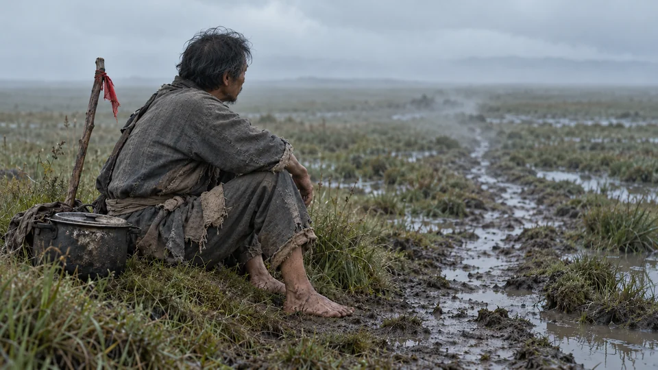

从故事出发 · 回到证据
一根路标，
能告诉我们什么？
故事让我们走近一个人的处境。史料帮助我们分清：哪些是创作，哪些有依据，哪些还需要继续追问。

你从故事中的探路棍与红布来到这里。故事进度已保留，核对资料后可以回去接着走。
01 / 先说说你的理解
先不急着寻找“标准答案”
故事中的一个片段
02 / 把故事放回史料旁
同一个画面，哪些信息有依据？
阅读下面两张资料卡，勾选你准备引用的资料。整理文字帮助定位线索；需要进一步核实时，请打开原始来源。
按你的选择提供的资料引导 · 项目组编写
史料阅读助手
可选请它读一读我的解释
助手会结合本页资料回应你的原话，并留一个追问。它的建议仍需核对，最终解释由你来写。
提问时，初始解释与资料编号会发送给 AI 服务。记录留在当前浏览器，不填写姓名或班级。
自己核对，也可以从这三点开始
项目组编写的资料提示 · 非 AI 反馈
请先选一张你准备引用的资料。
03 / 再写一次解释
让新的依据，进入自己的话
你最初这样说
04 / 留下一次理解的变化
你留下的，是一次思考的过程
不必为了“变化”而改口。重要的是，你现在能说清楚依据和边界。
依据与理解过程
这些是你的说明，教师仍需结合资料观察，系统不据此自动判定掌握程度。这次修改，依据说清楚了吗？
可选：请 AI 对照你的两次表达与依据说明，指出一处变化或仍需核对的地方，并留下一个追问。它不会替你改写，也不会给分。
此时会发送初稿、修订稿、两次判断、所选资料编号，以及你填写的依据和修改理由。请勿填写姓名等个人信息。
记录仅保存在当前浏览器。AI 帮助由你自行选择；初稿与修订稿反馈分别保留。未收集姓名或班级。下载后可自行选择是否交给老师。
给教师与带领者
把一段体验，接上一场有依据的讨论
适用于初中历史长征主题活动课试用。建议先体验相关故事片段，再进行这段探究；也可直接阅读本页情境独立使用。
- 2 分钟：学生先写解释，了解原有理解。
- 5 分钟：对照资料，区分创作、史实与推断；按需请 AI 追问。
- 3–8 分钟：修改解释并交流：你的依据在哪里？还有什么不能确定？
观察重点：能否准确区分艺术设计、引用相关依据、说明推断边界。不同感受没有统一答案。本页尚未验证课堂效果，建议时长也需在试用中调整。
打开教师试用记录：导入匿名成果、记录误解与教学困难 →查看教师活动单与试用记录建议 ↗